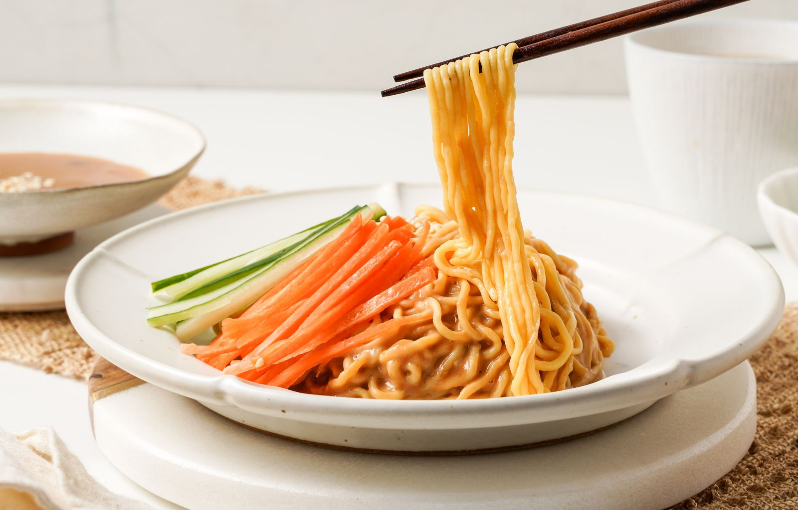

Noodles
Konjac Instant Noodles
NET WT. 15 OZ (426 G) · 2 servings per pouch
Springy, smooth konjac noodles with a sesame sauce packet and a soy sauce packet.
- Ready to eat. No cooking needed.
- 2 sauce packets inside: sesame and soy.
- Shelf stable. Best within 18 months unopened.
- Vegan 100%.
Gently knead the clear noodle bag to loosen the strands, open it, toss with the sauce packets and eat. Add your own sliced veggies if you like.
Contains wheat, soy, sesame.
Ingredients & Nutrition Facts
Ingredients
Konjac noodles: Water, wheat starch, konjac powder, non-GMO soy protein, hydroxypropyl distarch phosphate, curdlan gum, acetylated distarch adipate, sodium alginate, titanium dioxide, canola oil, β-carotene, calcium hydroxide.
Sesame sauce packet: White sesame, soybean oil.
Soy sauce packet: Black bean soy sauce, sesame oil, sugar, salt, seasoning (sodium L-glutamate, disodium 5′-inosinate, disodium 5′-guanosine nucleotide phosphate, disodium succinate, aminoacetic acid, DL-alanine).
Allergens: Contains wheat, soy, sesame.
Nutrition Facts
2 servings per container. Serving size 1/2 pack (213 g): noodles 175 g + soy sauce 25 g + sesame sauce 13 g.
| Per serving | Konjac Noodles (175g) | Soy Sauce (25g) | Sesame Sauce (13g) |
|---|---|---|---|
| Calories | 170 | 35 | 80 |
| Total Fat | 6g (9%) | 0g (0%) | 6g (9%) |
| Saturated Fat | 0g (0%) | 0g (0%) | 1g (5%) |
| Trans Fat | 0g | 0g | 0g |
| Cholesterol | 0mg (0%) | 0mg (0%) | 0mg (0%) |
| Sodium | 60mg (3%) | 1220mg (53%) | 5mg (0%) |
| Total Carbs. | 27g (9%) | 6g (2%) | 2g (1%) |
| Dietary Fiber | 0g (0%) | 0g (0%) | 0g (0%) |
| Total Sugars | 0g | 3g | 0g |
| Incl. Added Sugars | 0g (0%) | 0g (0%) | 0g (0%) |
| Protein | 0g | 3g | 2g |
Not a significant source of vitamin D, calcium, iron, and potassium. The % Daily Value (DV) tells you how much a nutrient in a serving of food contributes to a daily diet. 2,000 calories a day is used for general nutrition advice.
Storage
Store in a cool, dry place away from direct sunlight. Best within 18 months unopened.